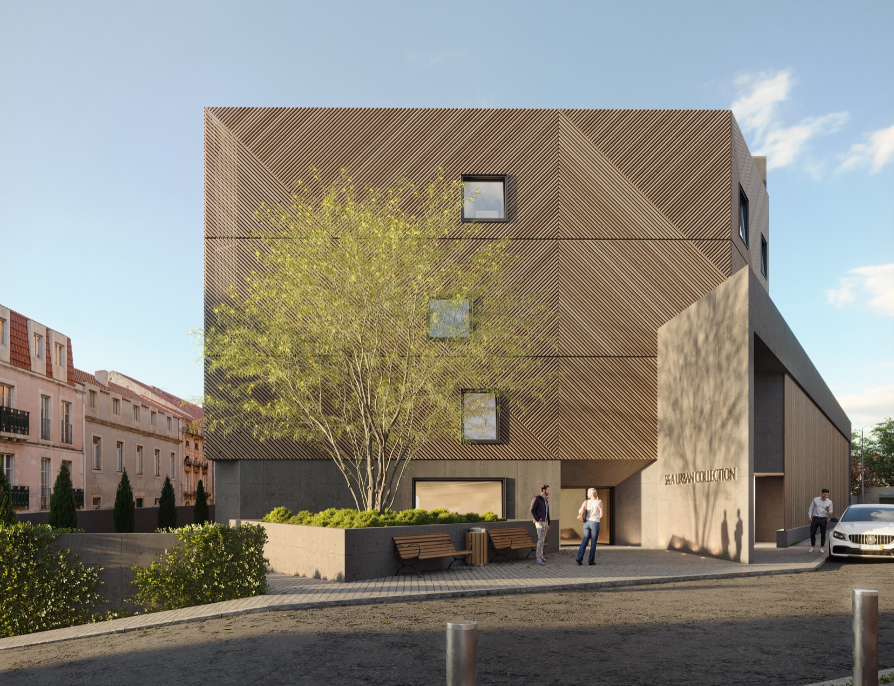
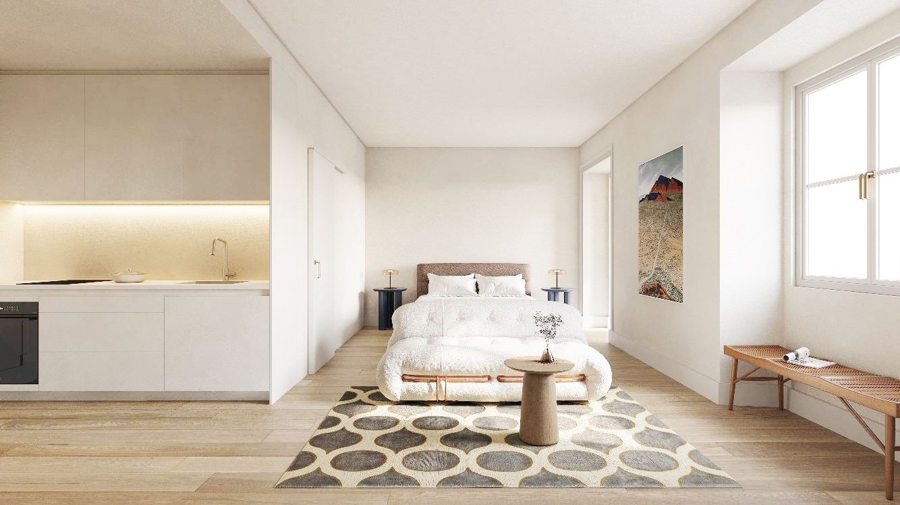
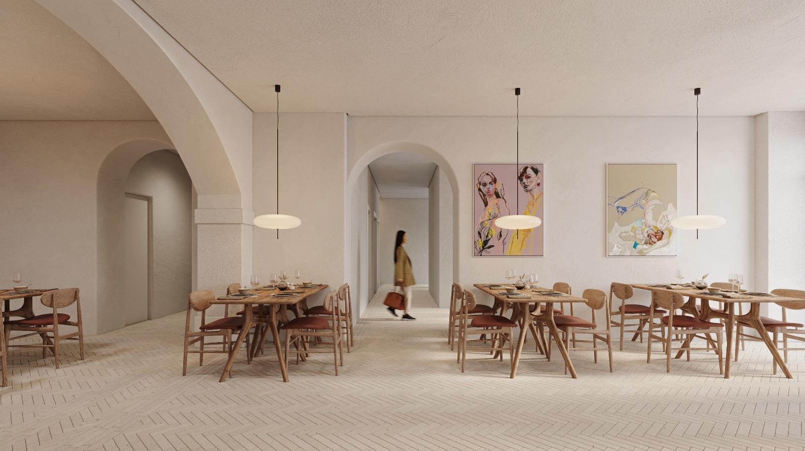
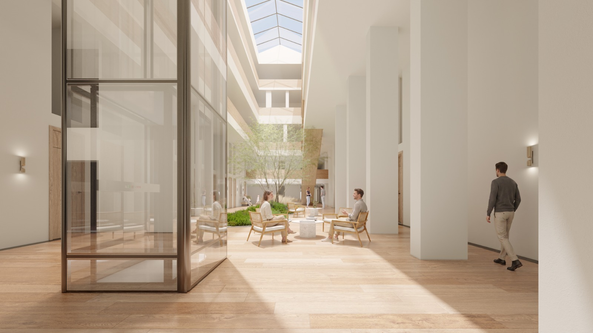

Smith & Adams · Portugal
Invest in Portugal
Two clear, proven pathways to European residency. Choose the route that fits your goals: entrepreneurial drive or passive capital.
Subject 01
D2 Visa
The D2 Visa is Portugal's route for non-EU, non-EEA and non-Swiss nationals who want to live in Portugal by starting a business, buying an existing one, or working as an independent professional. There is no fixed investment threshold - what matters is a credible, well-documented business plan and proof you can sustain both the business and yourself. We prepare your business plan and oversee the company incorporation, which is handled with specialist local lawyers.
Purpose
Built for active participation. Designed for those starting a company, acquiring one, or operating as a freelancer with a genuine connection to Portugal.
Process Timeline
Clear and predictable. The visa is issued within a few months of a complete application and converts to a 2-year residence permit on arrival.
Minimum Investment
No fixed minimum. You need a viable business plan and proof of sufficient funds - typically from around €11,000 for a single applicant in the first year, more for accompanying family.
Renewal Period
2+3 years. An initial 2-year permit, renewable for a further 3 years. Permanent residency can be requested after 5 years of legal residence.
Subject 02
Golden Visa
The Golden Visa is Portugal's residency-by-investment programme for non-EU, non-EEA and non-Swiss nationals who want EU residency without relocating full time. Since 2023, the qualifying routes are investment-based rather than real estate.
Purpose
A passive capital route. For investors who want optionality in the EU without giving up their base elsewhere.
Process Timeline
Structured and thorough. Processing currently runs 12 to 24 months due to AIMA's backlog, though the authority has been working through it steadily.
Minimum Investment
€500,000 in a qualifying fund. Real estate no longer qualifies (that route was removed in 2023). We work with fund advisors and can make the right introduction.
Renewal Period
Residency without relocation. Just 7 days in the first year and 14 days in each subsequent two-year period. Permanent residency available after 5 years.

Subject 03
Real Estate · Lisbon · Beato
Hygge House Beato
By Smith & Adams · Residential Project in Lisbon
The Project
Where the Nordic philosophy of wellbeing meets the riverside energy of Lisbon. A modern refuge rooted in the city's history.
Hygge House Beato blends contemporary architecture with urban convenience and the welcoming spirit of the Hygge philosophy. Advised and structured by Smith & Adams, it is a direct response to Portugal's growing hospitality market, offering units that combine functionality with a genuine sense of home.
The building comprises 137 studio-typology units, designed with a focus on efficiency, functionality and quality. Every space was conceived to meet the high standards the Portuguese market demands, without giving up the individuality and character that set this project apart.


A project where long-term investment value meets a community centred on the genuine feeling of home.
Project Pillars
- 01Modern Architecture. A contemporary language that dialogues with the historic identity of the Beato district and its riverside energy.
- 02Pure Comfort. Studio units designed for maximum efficiency without compromising quality of life and the sense of home.
- 03Long-Term Investment. Set within a growing hospitality market, the project offers solid prospects for appreciation and return.
- 04Community. Generous shared spaces that foster connection between residents and reinforce a sense of belonging.
- 05Historic Roots. Located in Beato, the project keeps a living connection with the memory and soul of Lisbon.
Hygge House Beato is the ideal choice for those seeking a modern refuge that stays connected to the city's historic roots and its riverside energy. A home that is, at once, a smart investment and a place where life unfolds with ease.
FAQ